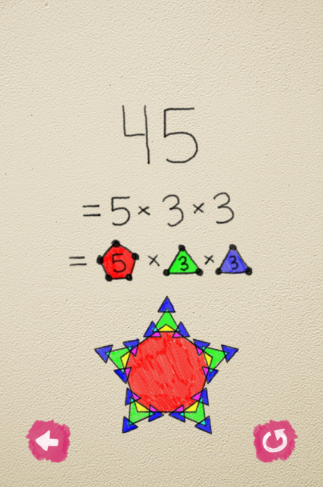
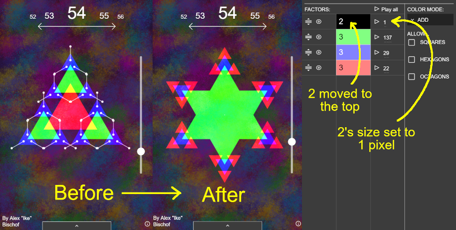
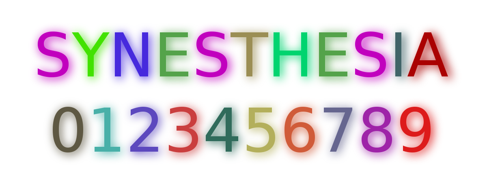
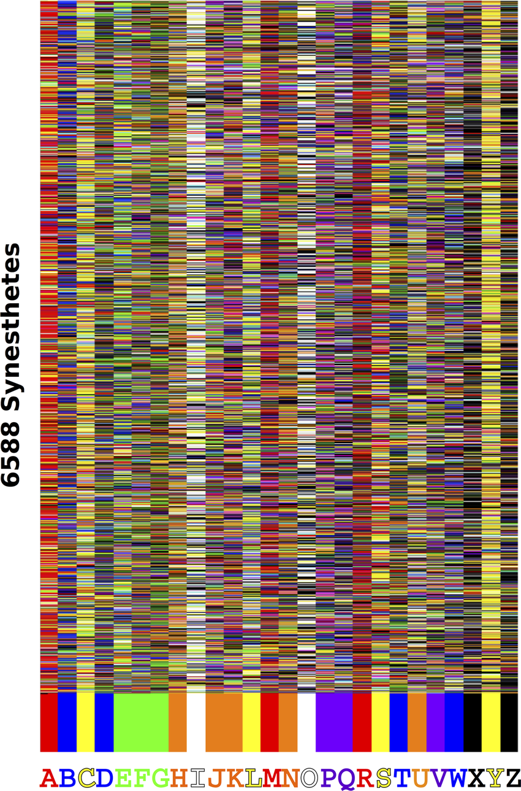

November 2022
Digits In Colors visualizes any number you input by breaking it down into its prime factors. This is called prime decomposition. Below, you can see an example of how 45 is turned into a branching tree of shapes.
 Visit Interactive ExplainerThis video explains the program's features, including the ability to reorder the hierarchy of the factors.
This method of visualizing shapes comes from the imagination of Jacob Barnett, who is a former child prodigy. To my knowledge, he didn't consciously come up with the idea. Instead, this is just the way he intuitively thinks about numbers.
I first heard about Jacob years prior in a video from Numberphile, and I noticed that no one had yet made a tool that could automatically generate Jacob's number diagrams, like the one shown in the video.
You may notice that the number 54 looks different in my program from the way Jacob draws it. This is because, for numbers with a factor of 2, Jacob doesn't use a two-pointed shape (also known as a line); instead, he duplicates the entire shape and overlays it on top of itself, rotated 180 degrees.
I didn't want my program to work this way because, while it looks nice for the number 54, with other numbers it could quickly make the diagram pretty messy. Using lines for factors of 2 also keeps the rules consistent, so the concept doesn't get overly confusing.
That being said, if you want my program to behave Jacob's way, you can do this by rearranging 2 to be at the top of the hierarchy of factors, and shrinking its size to the smallest amount.
To be fair, Jacob didn't consciously invent this system (to my knowledge), so it's not like he decided to make the rules inconsistent. And I haven't seen Jacob himself diagram numbers other than 54, so maybe there are other quirks to his system that we don't know about.
Maybe Jacob has some special form of synesthesia, which causes him to imagine shapes this way: synesthesia often plays by inconsistent rules.
I have synesthesia, and it comes in many forms, but my particular form (the most popular one) is called grapheme-color synesthesia, which means that my brain attributes every letter and number to the experience of a certain color.
My synesthesia follows inconsistent rules too: for example, I imagine vowels' colors changing depending on what sound they make, and the colors of some letters are often influenced by the colors of other letters in the same word.
If you have synesthesia, you don't choose your color scheme. It's involuntary, but there are some common patterns. This diagram shows the results of a survey of 6,588 grapheme-color synesthetes. You can see that A, O, and Y are very often attributed to red, white, and yellow respectively.
This was one of the projects I made for the Hallberg award at Sierra College, which is an art scholarship that is awarded to four faculty-selected students. Recipients are given the opportunity to showcase their artwork at Sierra College's Ridley art gallery. Here's my work being displayed on some monitors: